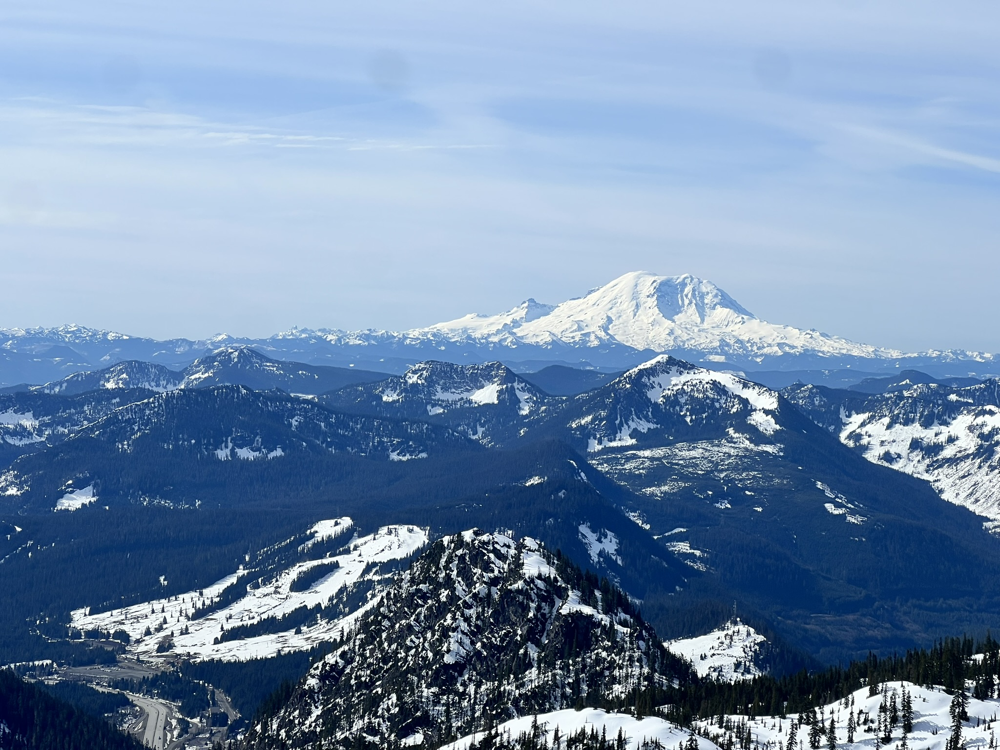
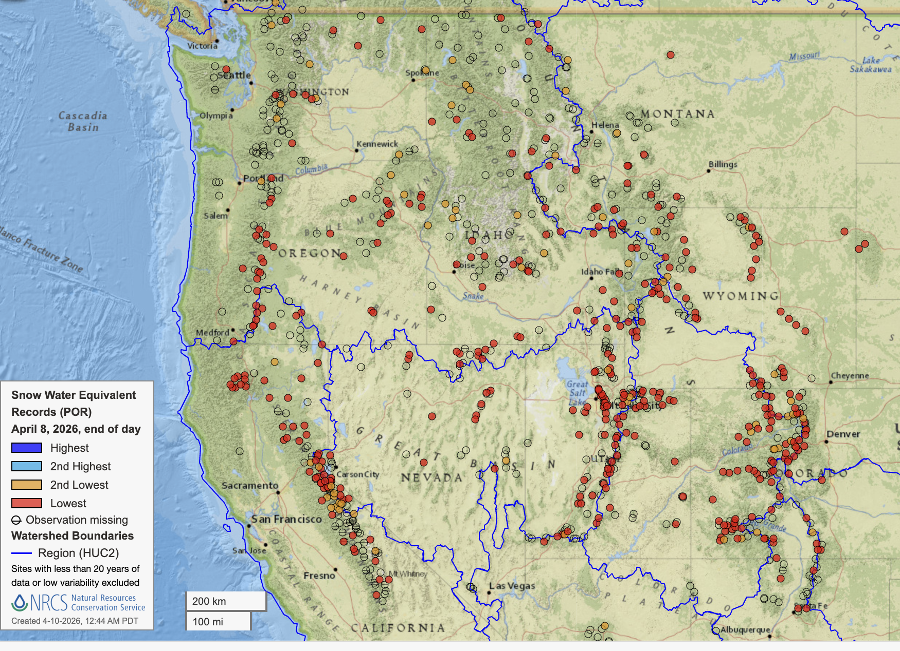
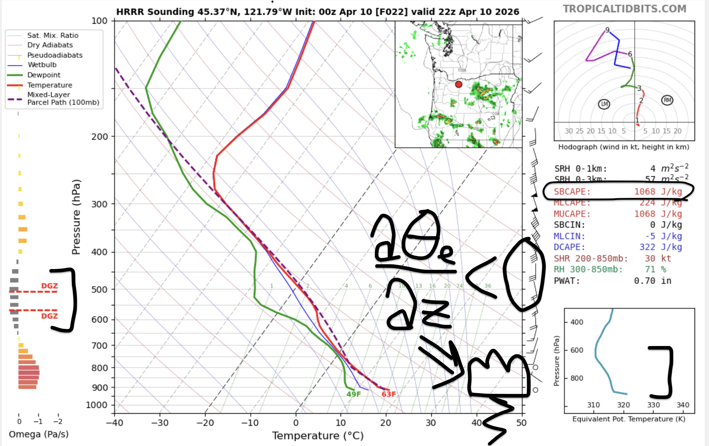
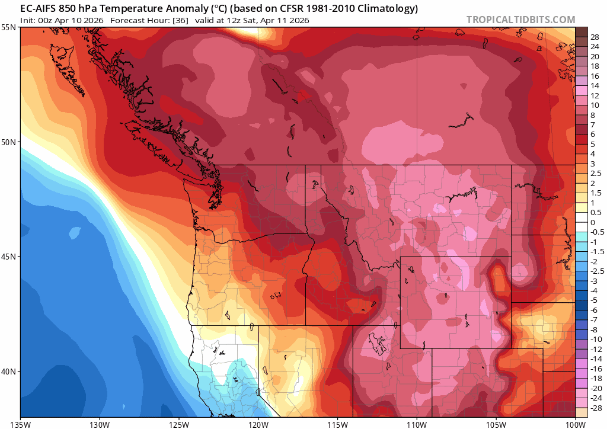
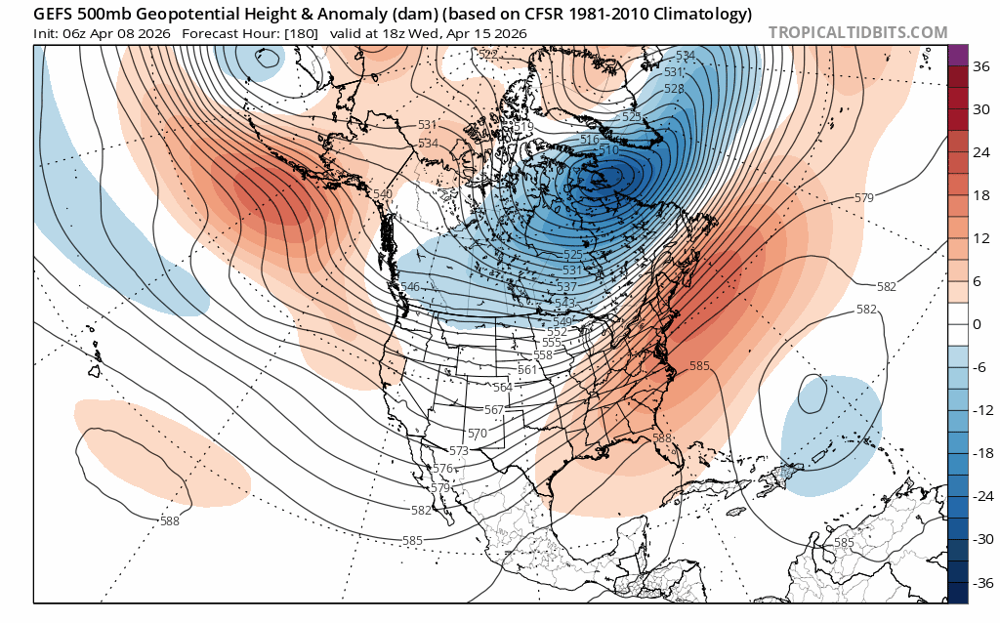
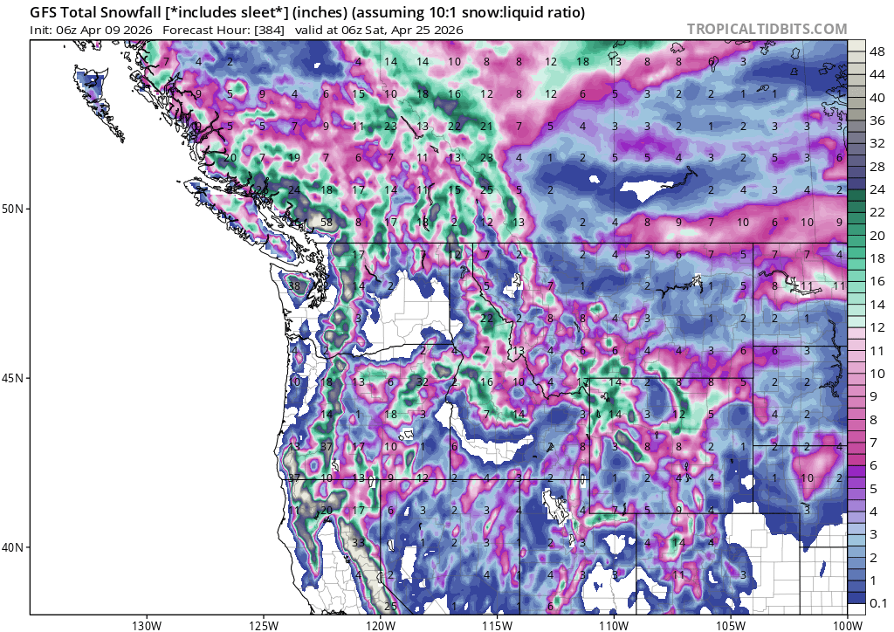

⚡️ Thunderstorms, Thermodynamics, and Potential Pow: Unsettled Weather Ahead
Welcome to The Dendritic Growth Zone!
Past Week's Recap
Lots of blue skies and sunshine this past week in the Cascades! Last weeks stormy weather quickly gave way to warm (bordering
on hot in my opinion) days over the weekend as a ridge built in overhead.
 
As is per usual in the spring, some folks were able to ski powder and corn all in the same weekend if you chose
the right aspect, elevation, and timing.
Very depressing but I still want to highlight just how historic the snow loss has been across the west in recent weeks.
All the red dots in this image are SNOTEL sites at RECORD LOW snow water equivalent for the date. This includes
every SNOTEL in Colorado and all but 3 in Utah with a long period of record. Somehow, we in the PNW have an enviable snowpack. Go figure.
🧙♂️ Forecast Discussion
Short-term (Friday-Sunday)
After last weekend's stunning bluebird skies, this weekend will strike a markedly different tone. A closed low spinning
off the coast of California will send mid/high level clouds and perhaps a very isolated shower or two to the region
from the south. An intriguing development to watch is the potential for scattered convective cells in Oregon and
Southwest Washington.

1. Circled on the right is `SBCAPE: 1068 J/kg`. 'Surface-based Convective Available Potential Energy (SBCAPE)' represents
the amount of energy a blob of air at the ground has available to rise upwards. Though this is not
exactly the same because this locaiton in near the mountains, it is interesting to note that the nearby Salem, Oregon airport
has over 80 years of NWS weather balloon data and has never observed an SBCAPE value above 1000 J/kg before May 1. Point being,
with warm air at the surface and cooler air coming in overhead, the atmosphere is primed to explode upwards. Warmer air is
less dense than cooler air and thus wants to rise up like a balloon! Another fun fact - the maximum speed
air can rise upwards is 0.5√(2·CAPE) or in this example ~22m/s or ~44mph.
2. My heiroglyphics dθe/dz < 0 essentially tell us the same thing as SBCAPE. dθe is the
derivative or change in equivalent potential temperature over the derivative/change in height (z). Equivalent potential
temperature is the temperature a moist/cloudy blob of air would be if brought to sea level (also known as the moist adiabatic lapse rate). When this value is negative, it
tells us that our cloudy blob of air that starts at the surface will be less dense than the atmosphere at all elevations
where dθe/dz < 0. Here, this is from the surface to 600millibars (~15,000ft above sea level). Strong
vertical motions in the atmosphere like this can produce severe weather such as lightning.
3. Our beloved dendritic growth zone on the left. The DGZ is level of the atmosphere where stellar dendrites grow and roughly
between -10C to -20C (14F to -4F). Here, we will sadly not see any lovely dendrites at the ground largely because this level of the
atmosphere is too dry. There is a large gap between the green line (dew point) and red line (air temperature) which tells us
we are unlikely to see clouds in the free atmosphere at this level. Oh well, maybe next week.

Medium-Term (Monday-Wednesday)

The major flip-flop in recent days has been the weakening precip signal for the weekend as the cutoff lows trended south while mid-week precip has grown as a shortwave trough dropping down from Alaska has amplified in recent model runs. Precipitation is still on the murkier side for this mid week storm but cold air is looking much more likely! A wonderful development to keep an eye on if you are like me and are not ready to give up on winter.
🧙🔮🧙♂️ Reading the crystal ball - 7+ day outlook
Looking at the ever reliable 384hr GFS total snowfall, we can clearly see that a ton of snow is on the way. 2"+ in Seattle? 12"+ blanketing the hills west of Portland? UNCLE GFS SAYS YES!!

Just kidding. Please do not use individual coarse weather models 16 days out for anything other than wishcasting and other shenanigans. In more real news, both the GEFS and EPS are keen on persistent troughing over the PNW around April 19-21. This is not "snowing in Seattle" cold but if it comes with a decent bit of moisture, we could be looking at yet another April pow day for many mid elevation sites. The NOAA Climate Prediction Center agrees with this assessment, giving us above average odds at cooler than normal weather in the 8-14 day range.
❄️ Snowfall
Weekend Snow Accumulation Forecast
| Site | Through 4am Saturday | Through 4am Sunday | Weekend Snow Accumulation (4pm Thursday through 4am Monday 13 Apr) |
|---|---|---|---|
| Mt. Baker (4500') | 0" | 0-1" | 0-3" |
| Washington Pass | 0" | 0-2" | 0-2" |
| Stevens Pass (4500') | 0" | 0" | 0-2" |
| Hurricane Ridge | 0" | 0" | 0-1" |
| Blewett Pass | 0" | 0" | 0" |
| Snoqualmie Pass | 0" | 0" | 0-1" |
| Crystal (5000') | 0" | 0" | 0-2" |
| Paradise | 0" | 0-1" | 0-3" |
| White Pass (5000') | 0" | 0-1" | 0-2" |
🧊 Freezing Level
- Friday: 8000 - 9000 feet
- Saturday: 6000 - 7000 feet (cooler further south)
- Sunday: 6000 - 7000 feet
🎿 Our Recommendations
Best Choice This Weekend: Patience and spring cleaning 🧹
This is shaping up to be a pretty all around poor ski weekend. High clouds, cooling (but not cold) temperatures, and scattered rain showers Saturday and Sunday doesn't scream great skiing to me. That being said, perhaps it might be best to get ahead of some work and errands over the weekend to take better advantage of potential April pow coming up on Wednesday and Thursday. Think cold thoughts...
Runner-Up: Exploration 🧭
However, precipitation accumulations will be quite light and temperatures mild. If you're looking to check out a new zone and don't care a whole lot about ski quality, I'm confident you can still get out on the snow and have some fun.
🚧👷Cascade Mountain Weather Updates👷🚧!
Patches are in! CMW hats will be on sale soon but in limited supply. Reach out if you're interested. We'll be selling them for $25.